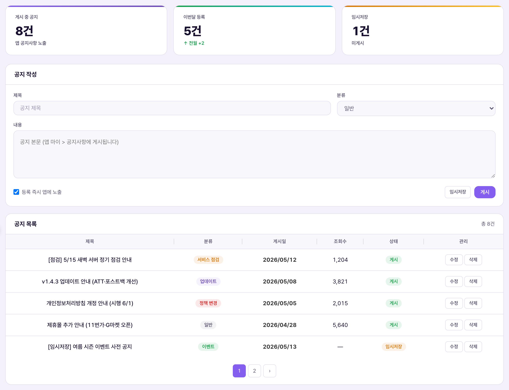
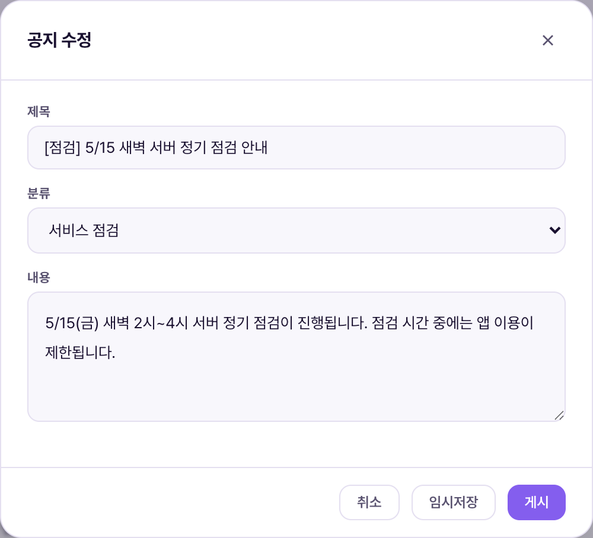

공지사항 관리는 앱 [마이 > 공지사항]에 뜨는 공지를 쓰고, 게시하거나 임시저장해두는 화면입니다. 점검 안내·업데이트 안내·정책 변경처럼 회원 전체에게 알려야 하는 글을 등록하는 곳입니다. 배너가 "홈 화면에 시각적으로 튀는" 용도라면, 공지사항은 "글로 남겨서 나중에도 찾아볼 수 있는" 용도입니다.Quản lý thông báo là màn viết và đăng (hoặc lưu nháp) thông báo hiện ở [Của tôi > Thông báo] trong app. Là nơi đăng những nội dung cần thông báo cho toàn bộ hội viên như hướng dẫn bảo trì·cập nhật·thay đổi chính sách. Nếu banner dùng để "nổi bật trên Home" thì thông báo dùng để "ghi lại bằng chữ, tra cứu lại sau cũng được".


| 요소Thành phần | 의미Ý nghĩa | 바꾸면 생기는 일Điều gì xảy ra khi thay đổi |
|---|---|---|
| 제목 · 내용Tiêu đề · Nội dung | 공지 본문 — 앱 [마이 > 공지사항]에 그대로 노출Nội dung thông báo — hiển thị nguyên văn tại [Của tôi > Thông báo] trong app | 둘 중 하나라도 비우면 저장 자체가 막힘("제목과 내용을 입력하세요")Để trống một trong hai thì không lưu được ("Nhập tiêu đề và nội dung") |
| 분류Phân loại | 일반 / 서비스 점검 / 업데이트 / 정책 변경 / 이벤트 5종 배지5 loại badge: chung / bảo trì dịch vụ / cập nhật / thay đổi chính sách / sự kiện | 목록에 색이 다른 배지로 표시될 뿐, 회원 알림 우선순위 등에 영향을 주는지는 확인 필요Chỉ hiện badge màu khác nhau trong danh sách, còn có ảnh hưởng độ ưu tiên thông báo cho hội viên hay không thì cần xác nhận |
| 임시저장Lưu nháp | 작성 중인 글을 회원에게 보이지 않는 상태로 저장Lưu bài đang viết ở trạng thái chưa hiện cho hội viên | 목록에 "임시저장" 배지로 표시되고, 앱 화면에는 노출되지 않음Hiện badge "Lưu nháp" trong danh sách, không hiển thị trên màn app |
| 게시Đăng | 회원 앱에 바로 공개Công khai ngay trên app của hội viên | "게시" 배지로 바뀌고 즉시 앱 [마이 > 공지사항]에 노출Đổi badge "Đăng" và hiện ngay tại [Của tôi > Thông báo] trong app |
| 수정Sửa | 목록에서 클릭하면 팝업(모달)이 뜨고 그 자리에서 수정Bấm trong danh sách thì hiện popup (modal) để sửa ngay tại chỗ | 임시저장 상태에서도 "게시"로 바꿔 발행 가능. 이미 게시된 글도 다시 임시저장으로 내릴 수 있음Có thể chuyển từ nháp sang "Đăng" để xuất bản. Bài đã đăng cũng có thể hạ lại thành nháp |
| 삭제Xóa | 목록·앱 양쪽에서 완전히 제거Xóa hẳn khỏi cả danh sách·app | 되돌릴 수 없음 — Firestore 문서 자체가 삭제됨Không thể hoàn tác — document trên Firestore bị xóa hẳn |
상태는 draft(임시저장)와 published(게시) 두 가지뿐입니다(확인됨: noticeSubmit 함수 매개변수). "예약 게시"나 "자동 만료" 같은 시간 기반 상태는 없으며, 게시 여부는 오직 이 두 버튼을 누른 시점에 그대로 반영됩니다.Chỉ có hai trạng thái draft (nháp) và published (đã đăng) (đã xác nhận: tham số hàm noticeSubmit). Không có trạng thái theo thời gian như "đăng theo lịch" hay "tự hết hạn", việc đăng hay không chỉ phản ánh đúng thời điểm bấm 1 trong 2 nút này.
| 상황Tình huống | 운영자가 하는 일Việc vận hành viên làm | 결과Kết quả |
|---|---|---|
| 서버 점검 예고Báo trước bảo trì server | 제목에 "[점검]" 접두어, 분류 "서비스 점검" 선택 → 내용에 점검 일시 기재 → "게시"Tiêu đề thêm tiền tố "[Bảo trì]", chọn phân loại "Bảo trì dịch vụ" → ghi rõ thời gian bảo trì trong nội dung → "Đăng" | 즉시 앱에 노출되어 회원이 마이 > 공지사항에서 확인 가능Hiện ngay trong app, hội viên xem được ở Của tôi > Thông báo |
| 다음 주 공지 미리 써두기Viết trước thông báo tuần sau | 내용 작성 후 "임시저장"Viết nội dung rồi "Lưu nháp" | 목록에 "임시저장" 배지로 남아 있고, 회원에게는 보이지 않음 — 때가 되면 "수정" → "게시"로 전환Còn trong danh sách với badge "Lưu nháp", hội viên không thấy — đến lúc thì "Sửa" → "Đăng" để chuyển |
| 게시 후 오탈자 발견Phát hiện lỗi chính tả sau khi đăng | 목록에서 "수정" → 팝업에서 내용 정정 → "게시" 재클릭Bấm "Sửa" trong danh sách → sửa nội dung trong popup → bấm lại "Đăng" | 같은 공지 문서를 덮어씀 — 새 글이 하나 더 생기지 않음Ghi đè lên đúng document thông báo đó — không tạo thêm bài mới |
| 철 지난 이벤트 공지 정리Dọn thông báo sự kiện đã qua | "삭제" 클릭Bấm "Xóa" | 목록·앱 양쪽에서 완전히 사라짐(복구 불가) — 기록을 남기고 싶다면 삭제 대신 그대로 둘 것Biến mất hẳn khỏi cả danh sách·app (không khôi phục được) — nếu muốn giữ lịch sử thì đừng xóa mà để nguyên |